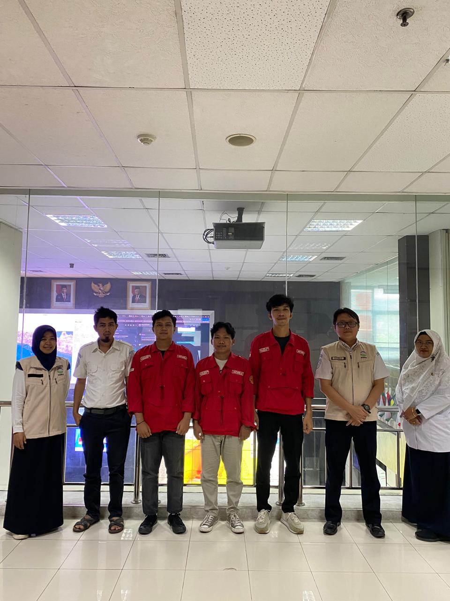
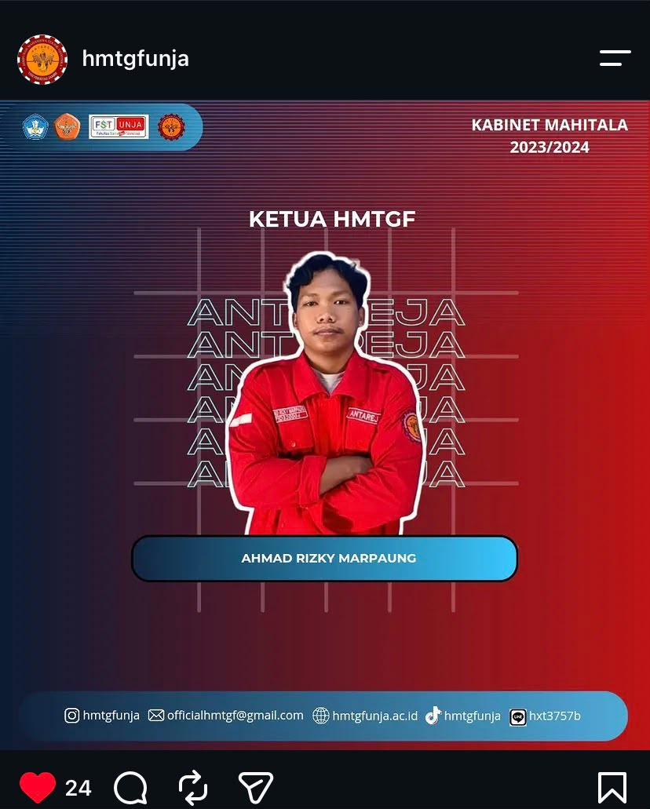
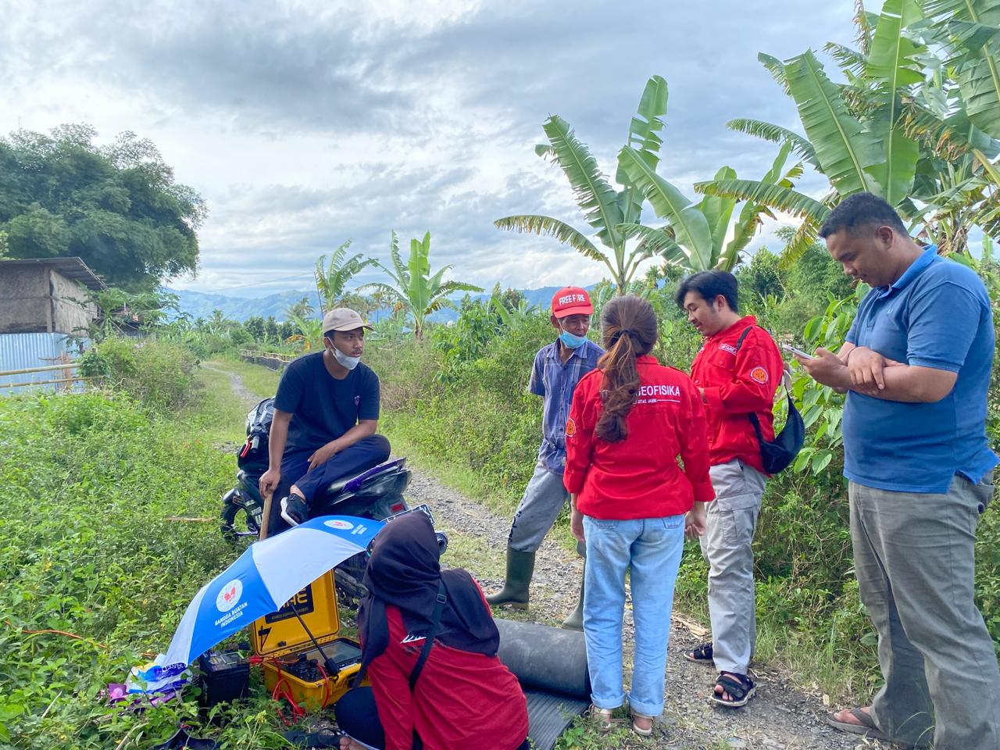
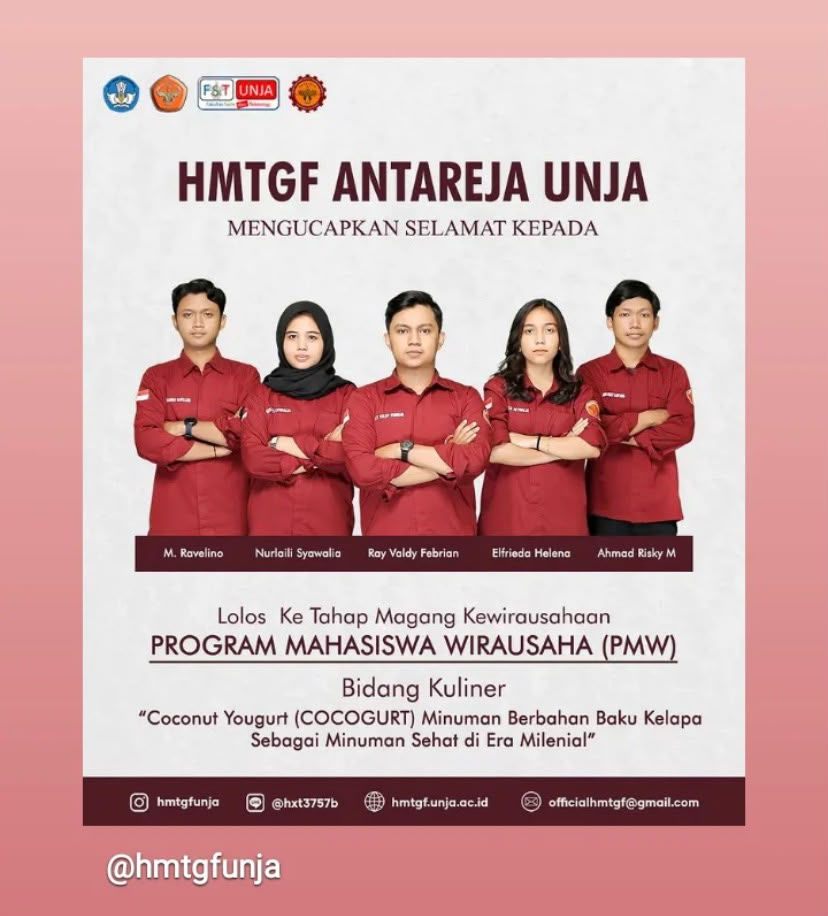

Fresh Graduate Teknik Geofisika UNJA
"Survey & Pemetaan, Mitigasi Risiko Berbasis Geofisika, Geospatial Data, dan Machine Learning."
Berpengalaman dalam pengolahan data geofisika (seismik, Geolistrik, gravity, Magnetik, HVSR), analisis spasial GIS (ArcGIS/QGIS), serta penerapan AI/Machine Learning dibidang Kebumian.
3.36
IPK Lulusan UNJA
24k+
Titik Data Satelit GGMplus
2x
Hibah Riset PKM & PMW
S1 Teknik Geofisika
Ahmad Rizky Marpaung
Ex-BMKG Pusat
Seismologi & Geofisika Potensial
Ketua HIMA 23/24
Teknik Geofisika UNJA
Pendidikan
S1 Teknik Geofisika UNJA
IPK 3.36 / 4.00 (2020-2026)
Domisili
Asahan, Sumatera Utara
Email Kontak
ahmadrizky1411@gmail.com
Telepon / WA
+62 823-7913-2468
Sebagai lulusan Teknik Geofisika Universitas Jambi, saya memadukan kemampuan lapangan geofisika dengan analisis komputasi modern untuk memecahkan tantangan geosains & geoinformatika.
Saya memiliki pengalaman praktis dalam akuisisi, pemrosesan, dan interpretasi data lapangan geofisika seperti Seismik, Geolistrik, Mikrotremor (HVSR), Ground Penetrating Radar (GPR), Gravity (Scintrex CG-5), serta Geomagnetik. Dalam lingkup analisis data, saya terbiasa mengekstraksi citra data satelit berskala besar (GGMplus) dan mengolahnya menggunakan software spesialis (Oasis Montaj, Surfer, MATLAB, ArcGIS/QGIS).
Dalam riset tugas akhir, saya mengintegrasikan Algoritma Machine Learning K-Means menggunakan bahasa pemrograman Python untuk melakukan zonasi tingkat bahaya seismik di Pulau Sumatera berdasarkan pembersihan katalog data gempa USGS.
Selain kapabilitas teknis, kepemimpinan saya teruji saat mengemban amanah sebagai Ketua Himpunan Mahasiswa Teknik Geofisika Antareja UNJA (2023–2024), mengelola puluhan pengurus, merancang alokasi anggaran, dan menyelenggarakan seminar & workshop teknis nasional.
Pemetaan zonasi risiko bahaya gempa bumi, anomali gravity, kerapatan petir, & analisis GIS.
Penerapan Machine Learning (Python/K-Means) untuk clustering seismisitas & geofisika potensial.
Rangkuman magang di instansi pemerintah, penelitian skripsi, kepemimpinan organisasi, dan hibah terdanai.
BMKG Pusat - Direktorat Seismologi Teknik & Geofisika Potensial

Program Studi Teknik Geofisika Universitas Jambi
"Zonasi Aktivitas Seismik Menggunakan Algoritma K-Means di Pulau Sumatra"
HIMA Teknik Geofisika Antareja Universitas Jambi

Kemendikbudristek & Universitas Jambi


PKM Riset Mikrotremor (Rp 7.000.000) - 2023/2024
Lolos pendanaan hibah kompetitif Kemenristekdikti terkait akuisisi & analisis karakteristik serta amplifikasi tanah metode HVSR/Mikrotremor di Kota Sungai Penuh untuk mitigasi bencana.
PMW Wirausaha 'Coconut Yogurt' (Rp 6.000.000) - 2022
Ketua tim penerima hibah wirausaha olahan pangan kelapa lokal. Mengelola alokasi modal, strategi pemasaran produk, dan laporan keuangan pertanggungjawaban.
Kombinasi metode pemrosesan geofisika, geoinformatika, hingga keahlian manajerial.
Pengalaman akuisisi & pengolahan data geofisika eksplorasi dan mitigasi bencana.
Perangkat lunak komputasi spasial, ekstraksi satelit, dan pemrograman AI.
Keahlian non-teknis pendukung kolaborasi tim dan eksekusi program kerja.
Saya selalu terbuka untuk berdiskusi mengenai peluang karir di industri pertambangan, eksplorasi geofisika, geoinformatika, maupun proyek analisis data spasial.
1. Metodologi Gayaberat (Gravity): Melakukan pengolahan 24.026 titik data gayaberat citra satelit GGMplus. Menerapkan koreksi Bouguer & Terrain dengan estimasi densitas Parasnis ($2.978\text{ g/cm}^3$) serta analisis spektrum Radially Averaged Power Spectrum (RAPS) untuk memisahkan anomali regional dan residual guna pemetaan batas intrusi air laut DKI Jakarta.
2. Geomagnetik: Mengolah data variasi harian komponen deklinasi & inklinasi dari Stasiun Geomagnetik Tuntungan Deli Serdang (110 rekaman) menggunakan XMAGPY.
3. Precursor Gempa: Pemantauan dan interpretasi anomali medan magnetik bumi harian sebagai parameter indikator potensi gempa bumi di Bali & Nusa Tenggara.
Penelitian ini berfokus pada analisis zonasi kerentanan gempa bumi di wilayah Pulau Sumatera berbasis algoritma Machine Learning unsupervised K-Means Clustering.
Katalog data histori gempa bumi diperoleh dari USGS, kemudian dibersihkan dan diproses menggunakan skrip Python untuk mengelompokkan wilayah berdasarkan kedalaman, magnitudo, dan frekuensi seismisitas. Hasil pemodelan diintegrasikan ke dalam Sistem Informasi Geografis (GIS) untuk menghasilkan peta zonasi tingkat kerentanan bahaya gempa bumi resolusi tinggi bagi upaya tata ruang mitigasi bencana.
Kabinet Mahitala • Himpunan Mahasiswa Teknik Geofisika Universitas Jambi
Kota Sungai Penuh, Jambi • Pendanaan Kemendikbudristek (Rp 7.000.000)
Kegiatan survei pengambilan data mikrotremor lapangan menggunakan instrumen seismometer di Kota Sungai Penuh. Pengukuran dilakukan untuk menganalisis frekuensi dominan, faktor amplifikasi tanah, serta indeks kerentanan seismik tanah daerah setempat berbasis pengolahan HVSR (Horizontal-to-Vertical Spectral Ratio).
Hibah PMW Universitas Jambi • Pendanaan Rp 6.000.000
Dokumentasi produk dan kegiatan Program Mahasiswa Wirausaha (PMW). Sebagai ketua tim, mengelola pengembangan produk pangan inovasi olahan kelapa lokal, merancang kemasan, manajemen pemasaran digital, dan pelaporan keuangan operasional usaha.